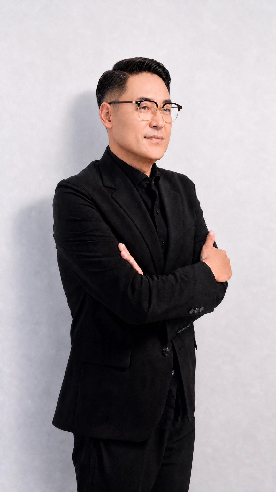

2003 · DRAMA OST
태양의 남쪽
여정(餘情) · 체념(諦念) · 태양의 남쪽
음원 정보 보기강인한의 음악, 인생의 이야기를 만나보세요.
뮤직비디오를 감상하거나 ‘영상 다운로드’ 버튼으로 MP4 파일을 무료로 저장하세요.

KANG IN HAN · 2NAN
본명 김종문 · 가수 / 보컬리스트
강인한은 깊은 저음과 호소력 있는 목소리로 사랑과 그리움, 삶의 애환과 다시 일어서는 희망을 노래하는 가수입니다. 록의 열정, 블루스의 깊이, 발라드의 감성을 담아 세대와 세대를 연결합니다.
거짓말 · 여정(餘情) · 그대 내 맘에 들어오면 · 내가 나를 버렸다 · 인생역전 · 그리움은 늙지도 않더라 · 쓰다… 소주처럼…
활동 자료: 동아일보(2004.08.26) · 벅스 아티스트 정보
강인한의 목소리로 기억되는 음악과 지난 활동을 만나보세요.
여정(餘情) · 체념(諦念) · 태양의 남쪽
음원 정보 보기그대만이
음원 정보 보기거짓말 · 그대 내 맘에 들어오면 · 세상이 그대를 속일지라도
음원 정보 보기슬픈 약속 · 늦은 후회 · 소망 · 사랑할 수 없어 · 길 · 바이올렛 등
음원 정보 보기내가 사는 이유
음원 정보 보기후회 · 그녀의 웃음 소리뿐 · 울고 싶어라 · 인생 · 빗속에 그리는 너
그녀의 웃음 소리뿐빗속에 그리는 너음원 정보 보기드라마 러브송 모음집 참여
음원 정보 보기울고 웃고, 사랑하고, 또 일어서는 것… 그게 인생입니다.
삶의 모든 순간, 노래로 함께 하겠습니다.
힘든 날엔 위로가 되고, 지친 날엔 힘이 되고,
기쁜 날엔 추억이 되는 음악.
— 강인한 —